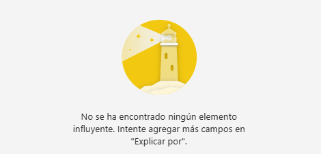
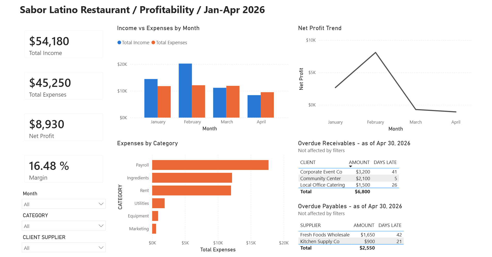
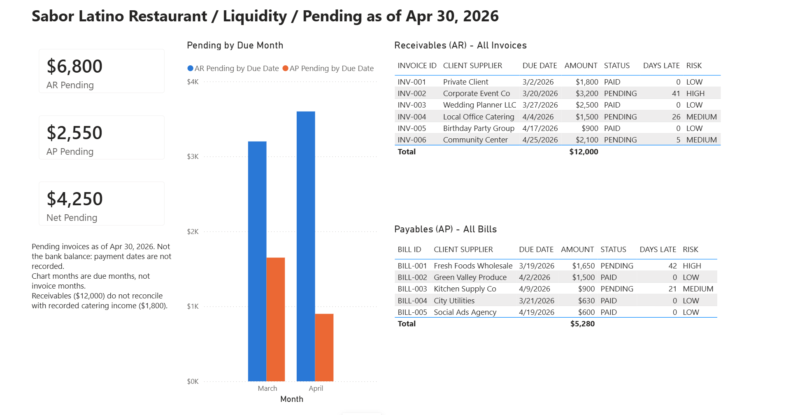
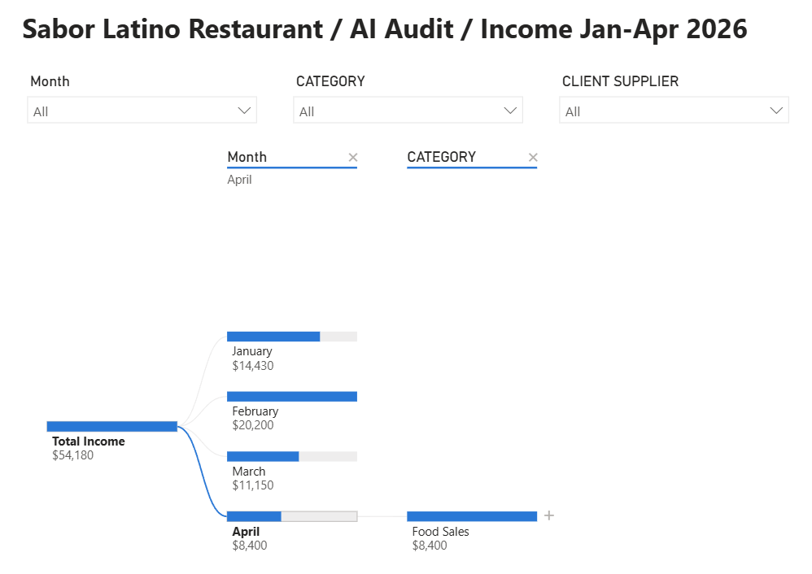
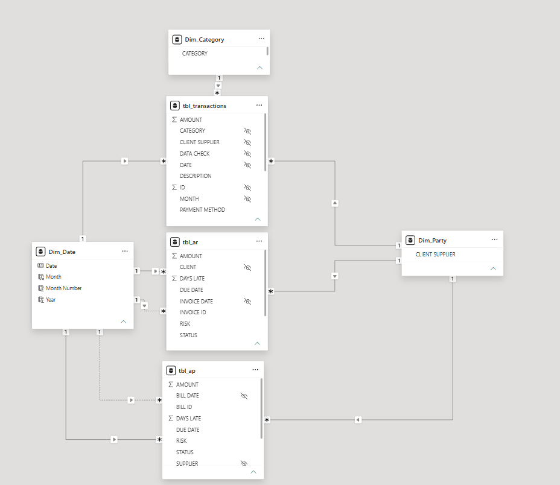

Proyecto de portafolio · Power BI · datos ficticios
Cobrar una sola factura vencida alcanza para pagar todo lo que el restaurante debe a sus proveedores.
El proyecto
Sabor Latino es un restaurante inventado para este proyecto. Construí en Power BI un tablero que responde dos preguntas del dueño: ¿gano dinero? y ¿cuánto me deben, cuánto debo y cuándo vence?
El objetivo fue detectar problemas en los datos antes de que lleven a malas decisiones. Los datos son ficticios y van de enero a abril de 2026: 40 transacciones, 6 facturas por cobrar y 5 por pagar.
Lo que encontré
- Con los ingresos registrados, de enero a abril el restaurante ganó $8,930, pero marzo y abril cerraron con pérdida: −$730 y −$1,100.
- Encontré un problema de datos que cambia esa conclusión: $10,200 en facturas de catering no aparecen en los ingresos. Son 5 de las 6 facturas, todas de marzo y abril. Las transacciones registran los gastos en la fecha de la factura, aunque estén sin pagar; con el mismo criterio, marzo ganaría $6,470 y abril $1,900.
- Le deben $6,800 en tres facturas vencidas y debe $2,550 a proveedores. La factura de Corporate Event Co, $3,200, alcanza por sí sola para pagarles a todos.
- Mi siguiente etapa de estudio es SQL: con él repetiré este cruce de facturas e ingresos.
Cómo lo construí
- Un Excel con las transacciones, las facturas y una columna de control de calidad que revisa cada fila.
- Un modelo en estrella en Power BI con 6 tablas conectadas y 9 relaciones. Una sola tabla de fechas sirve para dos fechas distintas: la de emisión y la de vencimiento de cada factura.
- 10 medidas DAX, con CALCULATE, USERELATIONSHIP y DIVIDE.
- Tres páginas: Profitability (rentabilidad), Liquidity (liquidez) y AI Audit (auditoría de IA). Las tablas de facturas vencidas no reaccionan a los filtros, para que siempre muestren lo pendiente al 30 de abril.
- Publicado con un enlace público que se abre sin cuenta.
Lo que la IA de Power BI no vio
Probé los visuales de IA de Power BI y revisé sus respuestas antes de creerlas.
- La IA del árbol de descomposición recomendó «Walk-in Customers, $52,380» como hallazgo. Es cierto, pero no sirve: Walk-in Customers no es un cliente, sino la etiqueta de los totales semanales de caja, y cubre el 97 % de los ingresos. La IA presentó un hueco de datos como si fuera un hallazgo de negocio.
- Key Influencers respondió que no había encontrado ningún elemento influyente y sugirió agregar más campos. En realidad no podía evaluar: Microsoft explica que ese mensaje aparece cuando las categorías tienen muy pocas observaciones para generalizar, y aquí había 40 filas, con tres categorías de una sola fila. El mensaje suena a conclusión sobre los datos, cuando es un límite de la herramienta.
- La narrativa automática (Smart Narrative) escribió que febrero tenía «el valor más bajo» de ganancia, cuando fue el más alto; en la misma frase llamó «más bajo» también a abril. Además dijo que febrero era el 64 % de la ganancia, porque sumó las pérdidas como si fueran ganancias: sobre la ganancia real ($8,930), febrero aporta $8,100, el 91 %.
![Texto que generó la narrativa automática: «En $8.100, February tenía el valor más bajo Net Profit y era 836,36% superior a April, que tenía el Net Profit más bajo en ($1.100). February tenía el más alto Net Profit en $8.100, seguido de January, March y April. February cuenta para 64,34% de Net Profit. En todos los 4 NombreMes, Net Profit varió de ($1.100) a $8.100. Total Income y el total Total Expenses se correlacionan positivamente entre sí. Total Income y Total Expenses divergieron más cuando NombreMes era February, cuando Total Income eran $8.100 más altos que Total Expenses.»](05_IA_Narrativa.png)

Ninguna de las tres herramientas avisó del problema real: 40 filas son pocas para esas conclusiones. Lo supe porque revisé los datos fuera de la herramienta.
Lo que este tablero no puede responder
- No hay número de clientes ni ticket medio. Si la venta cae, no se puede distinguir si vino menos gente o si gastó menos.
- La página de liquidez muestra lo pendiente de cobrar y de pagar, no el saldo del banco, porque no hay fechas de pago.
- Solo hay cuatro meses y ningún año anterior, así que no se puede descartar la estacionalidad.
- Faltan registros de venta: marzo no tiene la venta de comida de la semana 1, y abril no tiene las semanas 2 y 4 ni ventas de bebidas. Parte de las pérdidas puede deberse a registros incompletos.
- En cuentas por pagar no aparece una compra a crédito del 6 de abril a Fresh Foods Wholesale ($1,700). Si estuviera sin pagar, harían falta dos facturas, no una, para pagar a los proveedores.
Capturas




Sobre mí
Soy ingeniero industrial. Trabajé en ingreso de datos de alto volumen, estadística, nómina y estados financieros, y como dueño dirigí la gestión, la administración y el cumplimiento legal de un taller de mecánica automotriz. Hoy me estoy formando como analista de datos y BI con Power BI y Excel; Sabor Latino es mi primer proyecto de portafolio. Vivo en Miami, Florida.
En 2026 completé cuatro cursos certificados en Coursera: contabilidad financiera (Wharton, Universidad de Pensilvania), contabilidad básica (Intuit), finanzas para no financieros (Rice University) y Excel para negocios, nivel esencial (Macquarie University). Cada nombre abre su verificación en Coursera.
Busco empleo como analista de datos o BI, remoto en español, híbrido o presencial, y también proyectos freelance. Escríbeme a gesgi2021@gmail.com.